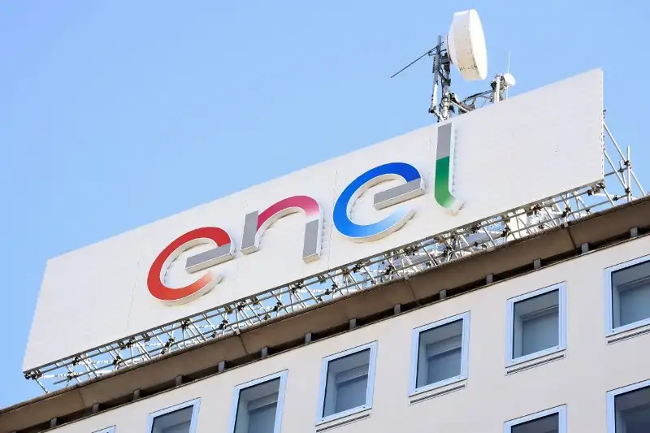

⚡ Problemas Regionais: Cubatão, Baixada Santista, São Paulo e Sudeste
Análise prática dos entraves locais que dificultam a implantação e a operação de projetos de energia renovável na região, técnicos, ambientais, sociais e institucionais.
• Visão geral da região:
A região da Baixada Santista e o entorno metropolitano de São Paulo concentram características que influenciam diretamente a viabilidade de projetos renováveis: alta densidade urbana, infraestrutura industrial e portuária intensa (Cubatão/Porto de Santos), áreas de preservação costeira e problemas históricos de poluição industrial. Essas especificidades exigem soluções técnicas e regulatórias adaptadas ao contexto regional.
Contexto prático e ações iniciais:
Projetos na região exigem: (1) avaliação de risco de solo/Áreas Contaminadas antes de obras, (2) especificação anti-corrosão para zonas costeiras, (3) coordenação com distribuidoras para pontos de conexão e (4) plano de logística reversa para painéis e baterias.
✨ Problemas locais:
➔ Cubatão:
Cubatão tem histórico de atividades químicas e industriais que geraram contaminação do solo, água e ar. Isso cria duas dificuldades para renováveis: exigências ambientais e mitigações adicionais em projetos de solo/utilização de áreas; necessidade de estudos de risco e licenciamento mais rigorosos, que aumentam custo e prazo de implantação.
- Mapear áreas contaminadas e priorizar telhados/metais estruturais em vez de obras no solo.
- Exigir laudo de contaminação e plano de remediação quando houver movimentação de terra.
- Incluir cláusula no projeto que preveja monitoramento de vapores e qualidade do solo durante obras.
➔ Baixada Santista / Litoral:
A proximidade com o mar implica mais corrosão (impacto na vida útil de equipamentos) e regras ambientais mais restritivas (faixas de preservação, proteção de mangues). Além disso, instalações em zonas costeiras precisam conciliar geração com turismo, pesca e logística portuária.
- Especificar materiais e tratamentos anticorrosão (revestimentos, aço inox/galvanizado) e plano de manutenção semestral.
- Realizar análise de uso do solo para evitar impacto em APPs e rotas pesqueiras, consultar órgãos ambientais municipais/estadual.
- Agendar manutenção fora da alta estação turística e integrar planos com operadores portuários para não prejudicar logística.
➔ São Paulo:
Na capital e arredores, a limitação de espaço útil (telhados, fachadas) e a heterogeneidade socioeconômica criam desafios para programas de microgeração. Rede de distribuição frequentemente congestionada em áreas densas exige coordenação com distribuidoras e soluções de integração.
- Implementar programa de agregação de microgeração (comunidades/cooperativas) para facilitar pontos de conexão e reduzir burocracia.
- Desenvolver linhas de microcrédito e parcerias com ONGs/IFSP para financiar instalações em habitações de baixa renda (ex.: CDHU).
- Realizar diagnóstico de carga por subestação para priorizar reforços de rede onde houver maior potencial de geração distribuída.
➔ Sudeste:
O Sudeste concentra grande parcela da carga do país, qualquer expansão renovável precisa considerar transmissão de longa distância, perdas e impacto de grandes usinas na estabilidade do sistema. Projetos locais devem dialogar com operadores regionais (ONS/Distribuidoras) para evitar curtailment e assegurar conexão.
- Mapear pontos de congestão na transmissão e solicitar estudos formais à distribuidora e ONS antes da proposta de conexão.
- Avaliar soluções híbridas locais (armazenamento + geração distribuída) para diminuir necessidade de reforço imediato de transmissão.
- Incluir simulações de impacto ao sistema (fluxo de potência) no estudo de conexão para reduzir risco de curtailment.
• Problemas sociais e institucionais:
- Desigualdade de acesso: famílias em programas habitacionais (ex.: CDHU) podem não ter acesso a financiamento ou informação para gerar sua própria energia. Solução proposta: ações de capacitação e linhas de microcrédito municipais.
- Governança fragmentada: abordagens desconexas entre prefeituras, estado e concessionárias aumentam o tempo de aprovação e custos. Solução proposta: criar fórum regional de coordenação para processos de aprovação mais rápidos.
- Capacitação: demanda por técnicos em instalação, operação e em tecnologias, lacunas locais em oferta de cursos e treinamentos. Solução proposta: cursos técnicos rápidos no IFSP e treinamentos especializados.
• Desafios técnicos específicos:
- Conexão e capacidade da rede: pontos de interconexão saturados exigem reforços que elevam custo de projeto. (Explicação: reforços podem incluir troca de transformadores, cabos e alteração de esquemas de proteção.)
- Corrosão costeira: equipamentos precisam de especificações especiais (revestimentos, manutenção mais frequente). (Explicação: considerar vida útil reduzida sem proteção e plano de manutenção ampliado.)
- Siting restrito: áreas protegidas e zonas industriais limitam locais disponíveis para projetos de grande escala. (Explicação: priorizar áreas urbanas não ocupadas e coberturas institucionais.)
- Logística de descarte: rotas de recolhimento e pontos de reciclagem ainda são incipientes na região, gera custos e insegurança regulatória. (Explicação: planejar contrato com cooperativas ou empresas de logística reversa e registrar volumes para garantir compliance.)
Recomendações:
- Mapear potenciais: inventário de telhados públicos (escolas, unidades de saúde, prédios da CDHU) para projetos-piloto.
- Proposta piloto IFSP+COMUNIDADE: projeto pequeno com medição antes/depois (produção, economia na conta, indicadores sociais).
- Engajar concessionária: solicitar pontos de estudo para conexão e avaliar necessidade de reforço de rede.
- Documentar logística de descarte: identificar empresas ou iniciativas locais que tratem reciclagem de módulos ou oferecem soluções de reaproveitamento.
- Definir KPIs e monitoramento: registrar kWh gerados, economia por unidade, curtailment, disponibilidade e volume de resíduos reciclados.
- Plano de engajamento comunitário: realizar 2 reuniões públicas por projeto (apresentação e feedback), capacitar 6–8 moradores por piloto para manutenção básica e divulgação das vantagens locais.
KPIs sugeridos para pilotos
- Produção (kWh/mês) por sistema
- Economia média (R$/mês) por domicílio beneficiado
- Taxa de curtailment (%)
- Disponibilidade operacional (%)
- Quantidade de resíduos coletados/reciclados (kg/ano)
Para mais soluções regionais: Clique Aqui